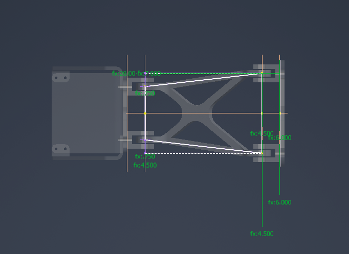
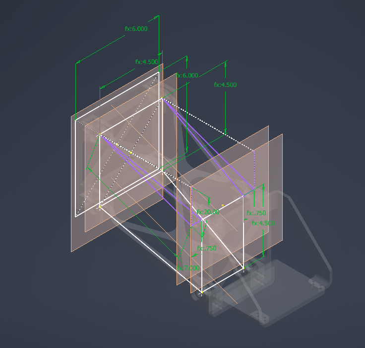

Cornell Mars Rover · Drives Team
2026–2027 Suspension: still working, check back later for a better fleshed out explination!
Building on previous designs, I rebuilt our swerve system from the ground up. The redesign replaces the former motor-and-gearbox system with a single actuator.
Overview
The goal of this redesign is to reduce potential points of failure and overall weight while maintaining more than 360 degrees of steering rotation.
This page will be updated with a fuller design story, including the original constraints, design iterations, calculations, and testing results.
Design process
The major design decisions: what changed from the previous system, why the actuator was selected, and how packaging, loads, serviceability, and manufacturability shaped the design.
CAD & project photos
Current CAD views show the suspension assembly and early layout work. The spaces below are reserved for photos of the physical build and rover testing.


